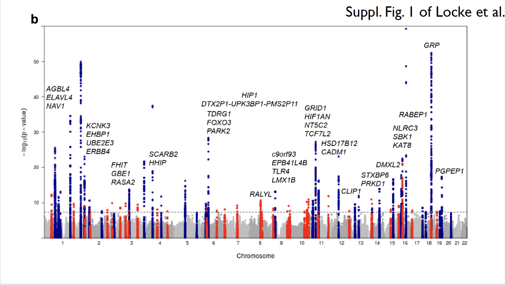
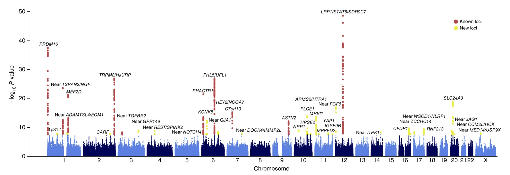
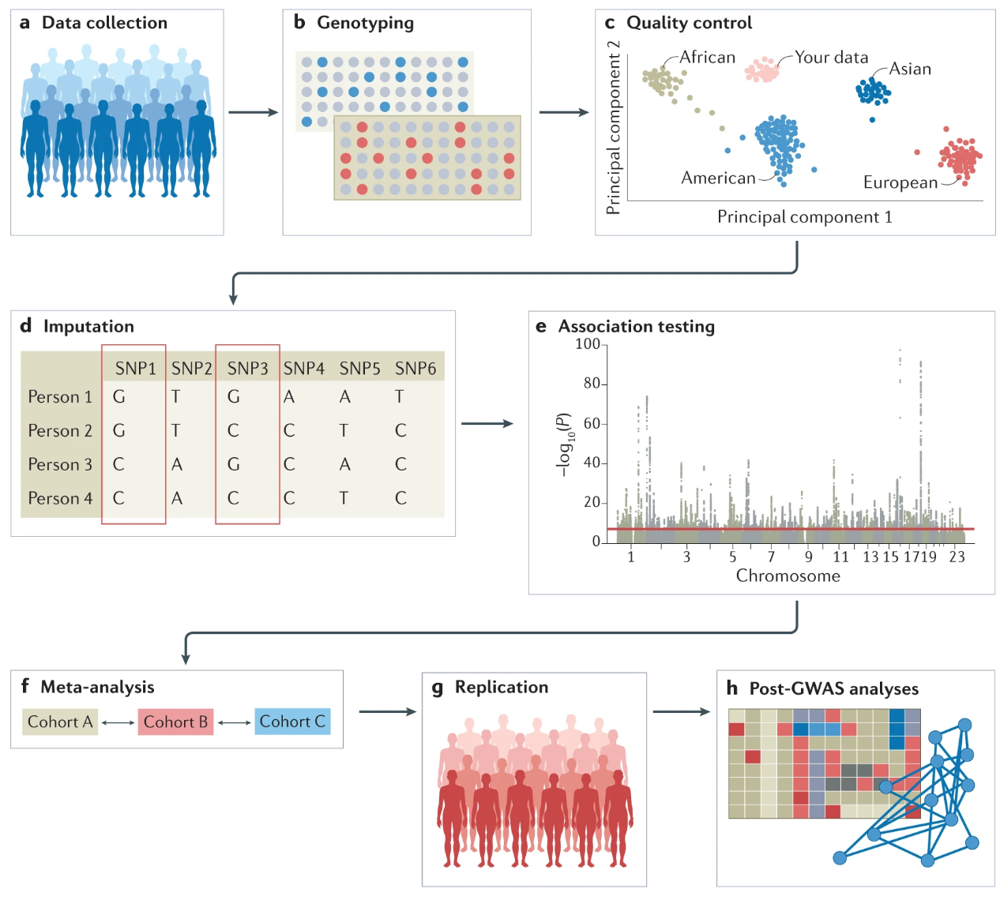

What is a GWAS?
A Genome-Wide Association Study (GWAS) aims to link genotype and phenotype information by identifying genetic variants that have a statistical association with a trait. A phenotype, also called trait, can be any measured or observed property of an individual. Phenotypes can include quantitative traits, like standing height or body mass index (BMI), as well as binary traits, such as diagnoses of multiple sclerosis or schizophrenia.
GWAS are used to explore the genetic architecture of complex traits and address questions about the distribution of variants contributing to the resulting phenotype, and their associated effect size on the trait. To understand GWAS, it is important to familiarise yourself with the key components and terminology involved in these studies:
General concepts
- Monogenic phenotype is determined by a single gene/locus.
- Oligogenic phenotype is influenced by a handful of genes/loci.
- Polygenic phenotype is influenced by many genes/loci.
- Complex trait is a (quantitative) phenotype that is not monogenic such as anthropometric, lifestyle, or behavioural traits. Typically, it is polygenic and influenced by both genetic and environmental factors.
- Common disease is a disease/condition which is common in the population (say, prevalence of 0.1% or more). Examples: Multiple sclerosis (also known as MS) (prevalence in the order of 0.1%), schizophrenia (\(\sim 1\%\)), or Type 2 diabetes (\(\sim 10\%\)).
- Common variant has a frequency of at least 1% (commonly, 5% is also used as the threshold).
- Low-frequency variant has a frequency of at least 0.1% and lower than a common variant.
- Rare variant has a frequency lower than a low-frequency variant.
Key concepts
GWAS have shown us that, in general, complex traits and common diseases are highly polygenic, influenced by many common variants with small effects. Identifying the exact causal variants for each phenotype is challenging due to the correlation structure among genetic variants (i.e., linkage disequilibrium, genetic interactions, etc.). Additionally, understanding the impact of rare variants on phenotypes requires very large sample sizes analyzed using genome sequencing techniques, rather than just SNP arrays.
In GWAS, it is also crucial to account for potential confounding factors. This refers to variables that are linked to both the genetic variants and the trait of interest (i.e., population stratification). Failing to control for these factors can lead to spurious relationships between genetic variants and a trait. We’ll discuss how to address the issue in notebook GWAS4 (Quality control).
Here are some terms and concepts that you need to be familiar with:
- Population stratification is the presence of multiple genetically distinct subpopulations that differ in their average phenotypic values (e.g., the distribution of north and south European individuals in PCA and the height of those individuals). When not accounted for, this can lead to spurious genetic associations.
- Heritability is the proportion of variance of the phenotype that is due to genetic differences between individuals (recommended article: Visscher, Hill, and Wray (2008)).
- Linkage disequilibrium, also known as LD, is the non-random association of alleles at different loci within a population. LD arises because alleles that are physically close on the same chromosome tend to be inherited together over generations (due to limited recombination), leading to a non-independent assortment of alleles at these loci. This means that certain genetic variants (SNPs, for instance) that are physically close to each other on the genome are often inherited together as a block. Tools like LDPred are key to tackling this problem (recommended reading: Vilhjálmsson et al. (2015)).
- Winner’s curse effect size of newly discovered alleles tends to be overestimated.
- Multiple testing refers to the statistical issue that arises when conducting multiple hypothesis tests simultaneously. In the context of GWAS, millions of genetic variants are tested for association with a trait. Researchers commonly apply the Bonferroni testing threshold by dividing the significant threshold by the number of independent tests. We will look further into other correction methods in Notebook 5.
- Linear regression is the statistical method commonly used in GWAS to identify genetic variants associated with traits.
In this module, we will focus on linear models. However, it’s crucial to acknowledge the existence of other model types. The standard linear regression model becomes overly flexible and struggles to fit the data effectively as the number of SNPs increases, especially when effect sizes are unrestricted. High correlations among SNPs exacerbate overfitting issues in linear models.
GWAS output
The primary outcome of GWAS is summary statistics, which consist of a table detailing various attributes for each tested SNP, including the effect size. This metric quantifies the magnitude of association between the SNP and the trait, typically expressed as an odds ratio (OR) for binary traits or beta coefficients for quantitative traits. The summary statistics file includes essential information such as SNP ID, SNP chromosome (CHR), genomic position, alleles, strand orientation, effect size with standard error, P-value or test statistic, minor allele frequency, and sample size.
Summary statistics can be used to calculate polygenic scores for a particular trait. A polygenic score (PGS) is an expression of the predicted genetic predisposition of an individual or a population of having a trait. If the prediction is on a discrete phenotype such as a disease, these scores are known as polygenic risk scores (PRS).
GWAS examples
Now, let’s look at some recent examples of GWAS. There are two primary types, a) studies focusing on quantitative traits and b) those investigating disease phenotypes.
Example 1 QT-GWAS
GWAS on body-mass index (BMI) (Locke et al. 2015) combined data from 339,000 individuals from 125 studies around the world to explore the relationship between genetic variants and BMI. This study identified 97 genomic regions strongly associated with BMI. Pathway analyses provided evidence supporting the involvement of the central nervous system in obesity susceptibility. Some of the newly identified candidates are genes involved in pathways related to synaptic function, glutamate signaling, insulin secretion/action, energy metabolism, lipid biology, and adipogenesis.

Example 2 Disease GWAS
GWAS on migraine (Gormley et al. 2016) combined genetic data on 60,000 cases (individuals with migraine) and 315,000 controls (individuals with no known migraine) originating from 22 studies. Genetic data was available on millions of genetic variants. At each variant, the genotype distribution between cases and controls was compared. This study identified 38 regions of the genome that showed a significant statistical association with migraine. Downstream analyses integrated these genes into pathways and cell types, revealing an enrichment of signals near genes that are active in the vascular system.

A third type of GWAS, known as Trait GWAS, focuses on investigating variants linked to specific traits or characteristics that are not quantitative but may not necessarily be a disease (e.g., eye color, hair texture, response to medicaments, etc. ).
Overview of GWAS Steps
The aim of genome‐wide association studies (GWAS) is to identify single nucleotide polymorphisms (SNPs)-of which the allele frequencies vary systematically-as a function of phenotypic trait values (e.g., between cases with schizophrenia and healthy controls, or between individuals with high vs. low scores on neuroticism). The identification of trait‐associated SNPs can provide new insights into the biological mechanisms underlying these phenotypes. Advances in technology have made it possible to study the effects of numerous SNPs spread across the genome. Before diving into the procedure, let’s review some essential concepts. The typical steps involved in a GWAS are illustrated in the figure below:

a) Data Collection: Data can be collected from study cohorts, but there is also valuable genetic and phenotypic information that can be used from biobanks or repositories. Depending on the study’s focus, various data collection methods will be used, including questionnaires, clinical assessments, biological samples, or anthropometric measurements. Comprehensive data will allow researchers to investigate the relationships between genetic factors, environmental exposures, and health outcomes. Confounders need to be carefully considered and recruitment strategies must not introduce biases such as collider bias.
b) Genotyping: Genotypic data can be collected using microarrays to capture common variants, or next-generation sequencing methods for whole-genome sequencing (WGS) or whole-exome sequencing (WES). The data is saved in specific file formats that can be used for downstream analyses.
c) Quality control: Quality control includes steps both at the wet-laboratory stage, such as genotype calling and DNA switches, and dry-laboratory steps on called genotypes, involving filtering both at the sample and variant level. For instance, poor single-nucleotide polymorphisms (SNPs) and samples will be filtered out. It is also important to detect population strata in the cohort using principal components analyses (PCA). Panel c) of the figure, captures the overall genetic diversity and relatedness within the study cohort by clustering individuals who are more genetically similar.
d) Imputation: Genotypic data can be phased, and missing (“untyped”) genotypes are often imputed using data from reference populations like the 1000 Genomes Project or TopMed. It is crucial that the reference panel closely matches the ancestry of the individuals being imputed for optimal accuracy, while also being diverse enough to represent the entire population. In panel d) of the figure above, genotypes of SNP1 and SNP3 are imputed based on the directly assayed genotypes of other SNPs. Examples of widely used imputation software include SHAPEIT, BEAGLE, and IMPUTE2.
e) Association testing: Genetic association tests are conducted for each genetic variant, using an appropriate model (for example, additive, non-additive, linear, or logistic regression). Regardless, of the approach used, it is important to correct for confounders (including population stratification) and control for multiple testing. Outputs are scrutinized for unusual patterns, and summary statistics are generated.
f) Meta-analysis: A very large number of individuals is required to achieve powerful GWAS. Commonly, to increase sample size, GWAS are typically conducted within consortia such as the Psychiatric Genomics Consortium, the Genetic Investigation of Anthropometric Traits (GIANT) consortium, or the Global Lipids Genetics Consortium. This can be especially relevant in under-studied populations. These consortia analyze data from multiple cohorts using tools such as METAL or GWAMA.
g) Replication: Results can be validated using internal replication or external replication in an independent cohort. External replication requires the cohort to be ancestrally matched and not share individuals or family members with the discovery cohort.
h) Post-GWAS analyses: In silico analyses involve fine mapping, SNP-to-gene mapping, gene-to-function mapping, pathway analysis, genetic correlation analysis, mendelian randomization, and polygenic risk prediction. Functional hypotheses can be further tested using experimental techniques such as CRISPR or massively parallel reporter assays, and results can be validated in human trait/disease models (not shown in the figure).
Software overview for each GWAS Steps
Numerous software tools are available for conducting GWAS. This table by Uffelmann et al. (2021) provides an overview of state-of-the-art tools, categorized by each step in the analysis process.
This course will cover data collection and genotyping, quality control (which will look at factors such as relatedness, population structure, and summary statistics), and association testing.
Modern GWAS involves analyzing tens of thousands of individuals and millions of genetic variants, requiring specialized software capable of handling specific file formats. Among the most commonly used tools for this purpose is PLINK, which we will use in the upcoming notebooks. Additionally, we will explore advanced tools designed for beyond-standard GWAS analysis.
There are more advanced tools such as LDAK, BOLT-LMM and Regenie.
- LDAK contains non-standard models for GWAS and PRS analysis which are periodically updated.
- BOLT-LMM is highly efficient for large datasets and more powerful at controlling for false positives due to the mixed model approach.
- Regenie is written in C++ and fast at whole genome regression models on very large genome-wide association studies. These tools are computationally more intensive but necessary when the size of a study scales up considerably.